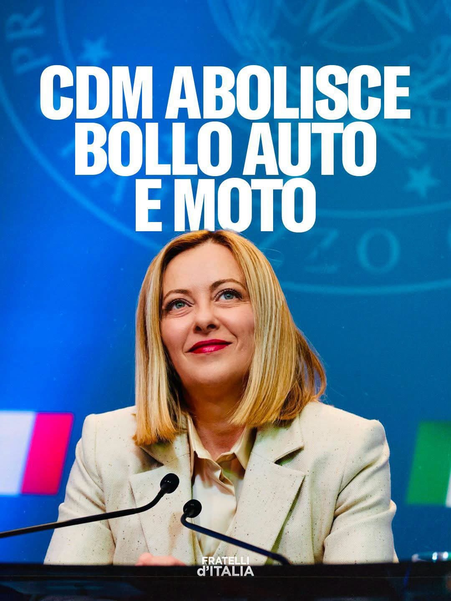

Abschaffung der Kfz-Steuer für Autos und Motorräder: „strukturelle Maßnahme im Interesse der Italiener“
Nicht amtliche Übersetzung der auf Italienisch veröffentlichten Mitteilung.
Am 16. September 2026 verabschiedet der Ministerrat das Dekret, das ab 2027 die Kfz-Steuer für Autos bis 80 kW und für Motorräder abschafft. Für Sigismondi ist es eine strukturelle Maßnahme: Sie nimmt denen, die täglich Auto und Motorrad nutzen, eine drückende Steuer und gehört zur Steuersenkungspolitik der Regierung.
Warum es wichtig ist: Die Kfz-Steuer belastet jedes Jahr fast alle Familien: Die Regierung kündigt ihre Abschaffung als strukturelle Maßnahme an, im Rahmen einer Politik der Steuersenkung.

„Die Abschaffung der Kfz-Steuer für Autos und Motorräder ist, wie Ministerpräsidentin Meloni betont hat, eine strukturelle Maßnahme, die im Interesse der Italiener konzipiert wurde. Schluss also mit einer drückenden Steuer, die den Alltag der Mehrheit der Italiener belastete, die täglich Auto und Motorrad nutzen; sie fügt sich in die Steuersenkungspolitik der Regierung ein. Die Linke predigt Vermögenssteuern, die Rechte hilft ganz konkret den Familien.“
Das erklärt der Senator von Fratelli d’Italia Etelwardo Sigismondi.
Originaltitel der Mitteilung: Kfz-Steuer, Sigismondi (FdI): Abschaffung ist eine strukturelle Maßnahme im Interesse der Italiener